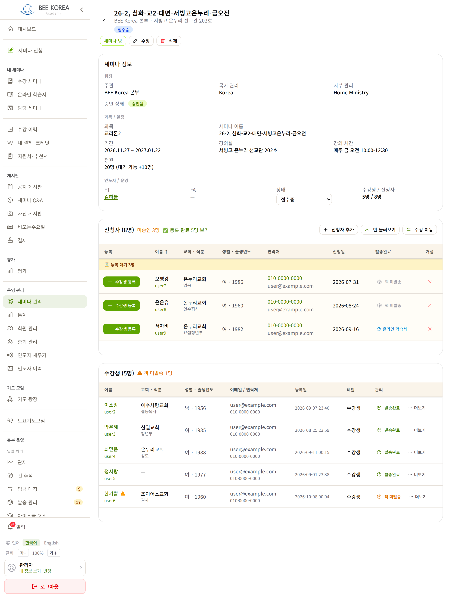
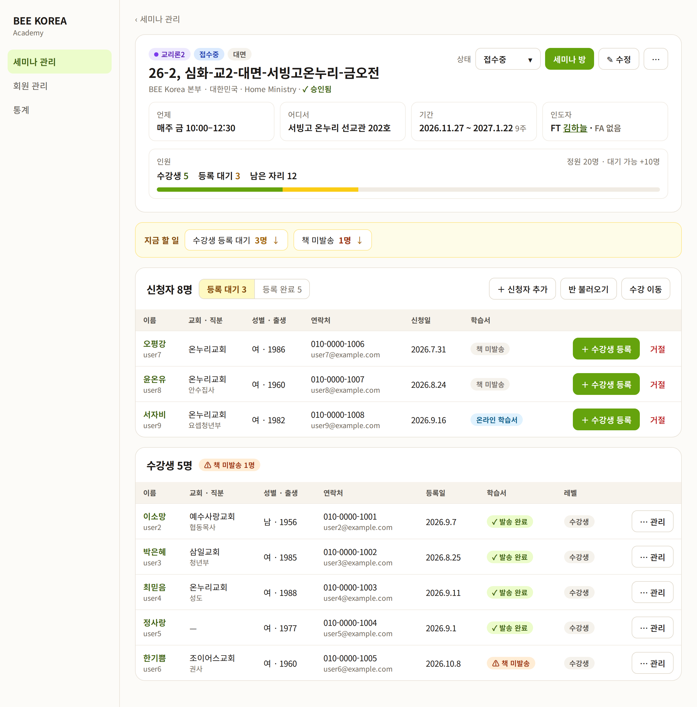
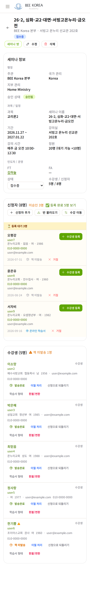
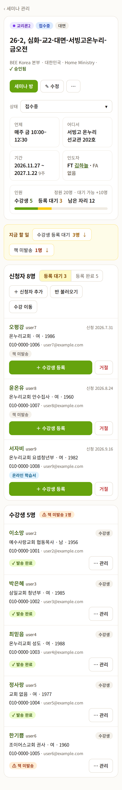

LMS 세미나 관리 상세 — 디자인 시안 1차
2026-10-11 · 본부·인도자가 반을 관리하는 화면(/admin/seminars/[id]) · 반 정보는 실제 값(교리론2, 서빙고 금 오전), 사람 이름·연락처는 모두 가짜로 바꿨습니다 · 아직 적용 전
무엇이 바뀌나
- 맨 위 요약 카드 — 과목·상태·대면 칩 → 반 이름 → 주관·나라·지부·승인을 한 줄로. 지금은 「행정」 묶음이 3칸 + 승인 1줄을 차지합니다
- 핵심 4칸 — 언제 · 어디서 · 기간(주 수) · 인도자. 학생 화면과 같은 규칙(이름표 작고 흐리게, 값 진하게)
- 인원 막대 — 수강생 5 · 등록 대기 3 · 남은 자리 12 를 정원 20 위에 색으로. 지금은 「5명 / 8명」 글자뿐이라 정원과 비교가 안 됩니다
- 상태 고르기는 위로 한 곳 — 지금은 제목 밑 칩과 아래 칸의 고르기 상자, 두 곳에 같은 상태가 있습니다. 반 이름도 제목과 「세미나 이름」 칸에 두 번 나옵니다 → 하나씩만
- 「지금 할 일」 줄 — 등록 대기 · 책 미발송처럼 손이 가야 하는 것만 모아서, 누르면 그 표로 내려갑니다. 할 일이 없으면 줄이 안 생깁니다
- 두 표의 칸 순서를 같게 — 이름 · 교회·직분 · 성별·출생 · 연락처 · 날짜 · 학습서. 지금은 신청자는 「전화→메일」, 수강생은 「메일→전화」로 순서가 반대이고, 날짜도 「2026-07-31」과 「2026-09-07 23:40」으로 모양이 다릅니다
- 버튼 자리 — 신청자 [수강생 등록]은 이름을 읽은 뒤 누르도록 줄 끝으로. 수강생 줄의 버튼 여러 개(이월·되돌리기·학습서 형태·환불)는 「⋯ 관리」 하나로. [삭제]는 [수정] 바로 옆이라 잘못 누르기 쉬워 「⋯」 안으로
- 표는 그대로 표 — 본부 화면은 한 줄에 많이 보이는 것이 우선이라(bee-app 규칙) PC 는 표를 유지하고 휴대폰만 카드로
PC


휴대폰


정해 주실 것
- [삭제]를 「⋯」 안으로 넣어도 될까요? 한 번 더 눌러야 하지만 실수로 지울 일이 줄어듭니다.
- 신청자 [수강생 등록]을 줄 끝으로 옮겨도 될까요? 지금은 맨 앞이라 이름보다 버튼이 먼저 보입니다. 간사님이 손에 익은 자리라면 그대로 둡니다.
- 수강생 줄의 버튼을 「⋯ 관리」 하나로 모을까요? 책 발송 표시만은 학습서 칩을 눌러 바로 바꿀 수 있게 둡니다(가장 자주 쓰므로).
1년 과정 「학생 이동」 버튼·아이스쿨 대조·종강 전 확인 창·수정 화면은 그대로 둡니다(이번엔 보기 화면만).